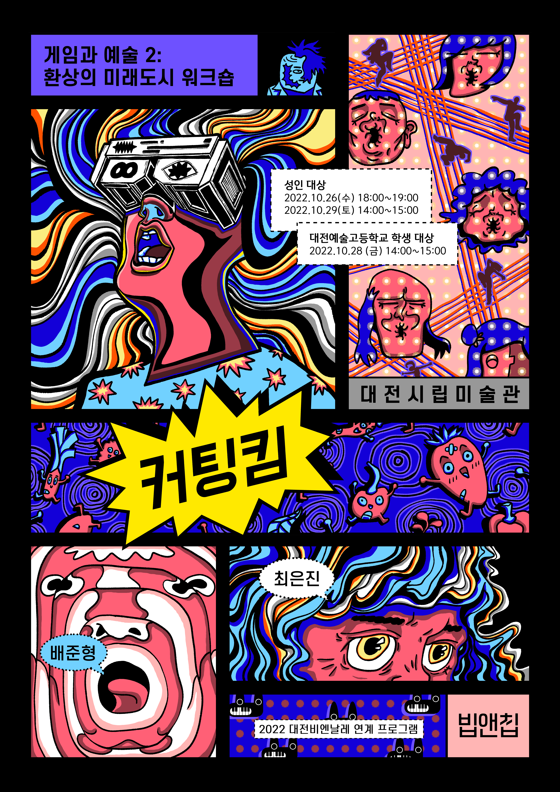

Other Projects
Here are some projects I enjoyed working on as a developer.
Games & Interactive Works

Related Publications
- SIGGRAPH Asia

Cutting Kim: Playful Transgression Through VR Voice Interaction in Public Exhibition ContextsACM Conference on Computer Graphics and Interactive Techniques in Asia (SIGGRAPH Asia) · Art Papers, 2025

More publications on Google Scholar.
* Equal contribution.